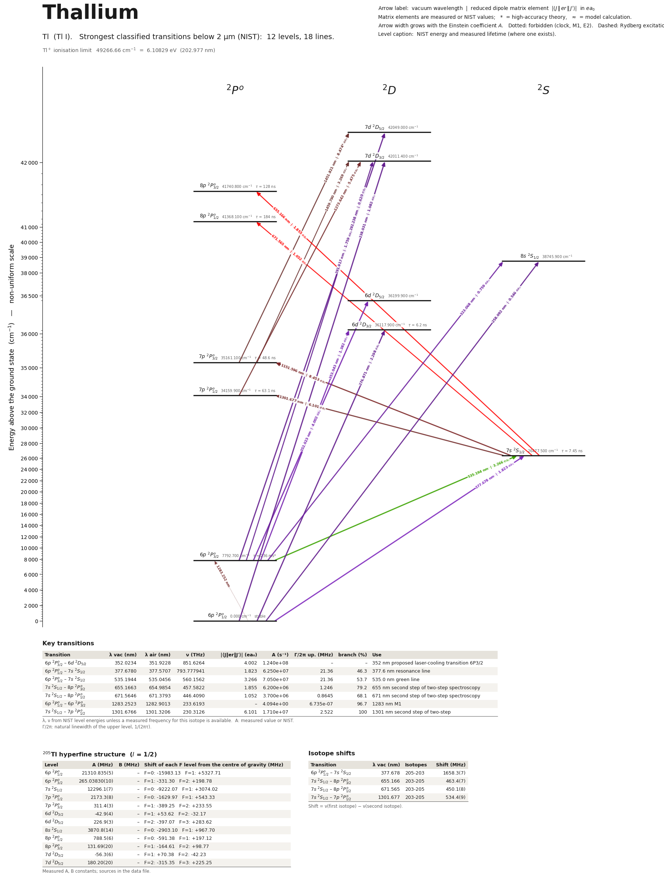

Thallium energy level diagram
Energy levels and transitions of neutral thallium (Tl I): the 18 strongest classified lines below 2 µm from the NIST Atomic Spectra Database and the 12 levels they connect, each line with its vacuum wavelength, frequency and, for 17 of them, the reduced dipole matrix element derived from the NIST transition rate. Measured lifetimes, transition rates, hyperfine constants and isotope shifts from the literature are included, each with its citation.
Hover a line or a level to isolate it, click to keep it selected. Scroll to zoom, drag to move.

Download: diagram (PDF) diagram (SVG) transitions (CSV) levels (CSV) source code

Key transitions of thallium
| Transition | λ vac (nm) | λ air (nm) | ν (THz) | |⟨J‖er‖J′⟩| (ea₀) | A (s⁻¹) | Γ/2π up. (MHz) | branch (%) | Use |
|---|---|---|---|---|---|---|---|---|
| 6p 2P°3/2 – 6d 2D5/2 | 352.0234 | 351.9228 | 851.6264 | 4.002 | 1.240e+08 | – | – | 352 nm proposed laser-cooling transition 6P3/2 |
| 6p 2P°1/2 – 7s 2S1/2 | 377.6780 | 377.5707 | 793.777941 | 1.823 | 6.250e+07 | 21.36 | 46.3 | 377.6 nm resonance line |
| 6p 2P°3/2 – 7s 2S1/2 | 535.1944 | 535.0456 | 560.1562 | 3.266 | 7.050e+07 | 21.36 | 53.7 | 535.0 nm green line |
| 7s 2S1/2 – 8p 2P°3/2 | 655.1663 | 654.9854 | 457.5822 | 1.855 | 6.200e+06 | 1.246 | 79.2 | 655 nm second step of two-step spectroscopy |
| 7s 2S1/2 – 8p 2P°1/2 | 671.5646 | 671.3793 | 446.4090 | 1.052 | 3.700e+06 | 0.8645 | 68.1 | 671 nm second step of two-step spectroscopy |
| 6p 2P°1/2 – 6p 2P°3/2 | 1283.2523 | 1282.9013 | 233.6193 | – | 4.094e+00 | 6.735e-07 | 96.7 | 1283 nm M1 |
| 7s 2S1/2 – 7p 2P°1/2 | 1301.6766 | 1301.3206 | 230.3126 | 6.101 | 1.710e+07 | 2.522 | 100 | 1301 nm second step of two-step |
λ, ν from NIST level energies unless a measured frequency for this isotope is available. A: measured value or NIST. Γ/2π: natural linewidth of the upper level, 1/(2πτ).
205Tl hyperfine structure (I = 1/2)
| Level | A (MHz) | B (MHz) | Shift of each F level from the centre of gravity (MHz) |
|---|---|---|---|
| 6p 2P°1/2 | 21310.835(5) | – | F=0: -15983.13 F=1: +5327.71 |
| 6p 2P°3/2 | 265.03830(10) | – | F=1: -331.30 F=2: +198.78 |
| 7s 2S1/2 | 12296.1(7) | – | F=0: -9222.07 F=1: +3074.02 |
| 7p 2P°1/2 | 2173.3(8) | – | F=0: -1629.97 F=1: +543.33 |
| 7p 2P°3/2 | 311.4(3) | – | F=1: -389.25 F=2: +233.55 |
| 6d 2D3/2 | -42.9(4) | – | F=1: +53.62 F=2: -32.17 |
| 6d 2D5/2 | 226.9(3) | – | F=2: -397.07 F=3: +283.62 |
| 8s 2S1/2 | 3870.8(14) | – | F=0: -2903.10 F=1: +967.70 |
| 8p 2P°1/2 | 788.5(6) | – | F=0: -591.38 F=1: +197.12 |
| 8p 2P°3/2 | 131.69(20) | – | F=1: -164.61 F=2: +98.77 |
| 7d 2D3/2 | -56.3(6) | – | F=1: +70.38 F=2: -42.23 |
| 7d 2D5/2 | 180.20(20) | – | F=2: -315.35 F=3: +225.25 |
Measured A, B constants; sources in the data file.
Isotope shifts
| Transition | λ vac (nm) | Isotopes | Shift (MHz) |
|---|---|---|---|
| 6p 2P°1/2 – 7s 2S1/2 | 377.678 | 205-203 | 1658.3(7) |
| 7s 2S1/2 – 8p 2P°3/2 | 655.166 | 203-205 | 463.4(7) |
| 7s 2S1/2 – 8p 2P°1/2 | 671.565 | 203-205 | 450.1(8) |
| 7s 2S1/2 – 7p 2P°1/2 | 1301.677 | 203-205 | 534.4(9) |
Shift = ν(first isotope) − ν(second isotope).
Closed and nearly closed transitions of thallium
| Transition | λ vacuum (nm) | Lower level | A (s⁻¹) | Leak per scattered photon | Photons before a leak | Where the leak goes |
|---|---|---|---|---|---|---|
| 6p 2P°3/2 → 6d 2D5/2 | 352.0234 | metastable | 1.240e+08 measured | 4.78 × 10−4 from theory | 2,090 | 7p 2P°3/2 4.78 × 10−4* |
A transition is closed when its upper level can decay only to the level it was excited from, so the atom keeps scattering photons. “closed”: among the levels NIST lists, no other level below the upper level has the opposite parity and |ΔJ| ≤ 1, so no other electric-dipole decay exists. Otherwise the leak is the sum of the branching ratios of the other decay lines of the upper level (or 1 − branching ratio where that of the line itself has been measured), and the number of photons is 1 / leak. “≥” and “≤”: at least one possible decay path has no listed rate, so the leak is a lower limit. These numbers are derived from the branching ratios, lifetimes and rates of this page, not measured as such; the tag names the weakest of the inputs, * marks theory and ≈ a model or semi-empirical calculation. Listed: lines that start on the ground level or on a metastable level and leak at most 10 %, unless more than three possible decay paths have no listed rate. Fine-structure levels only: hyperfine and Zeeman dark states and forbidden decays without a listed rate are not considered. Select a line in the diagram for the full list of its leak channels.
Listed Tl transitions below 2 µm
| Lower level | Upper level | λ vacuum (nm) | λ air (nm) | ν (THz) | Type | |⟨J‖er‖J′⟩| (ea₀) | A (s⁻¹) | Branching (%) | Source of matrix element / A |
|---|---|---|---|---|---|---|---|---|---|
| 6p 2P°1/2 | 7d 2D3/2 | 238.0306 | 237.9580 | 1259.4701 | E1 | 1.082 measured | 4.400e+07 measured | – | Safronova, Safronova, Johnson, Phys. Rev. A 71, 052506 (2005) (arXiv:physics/0410079), Ta… |
| 6p 2P°1/2 | 8s 2S1/2 | 258.0918 | 258.0146 | 1161.5729 | E1 | 0.553 NIST | 1.800e+07 NIST | – | NIST ASD (accuracy D) |
| 6p 2P°1/2 | 6d 2D3/2 | 276.8710 | 276.7893 | 1082.7874 | E1 | 2.298 measured | 1.260e+08 measured | 78.1 | Safronova, Safronova, Johnson, Phys. Rev. A 71, 052506 (2005) (arXiv:physics/0410079), Ta… |
| 6p 2P°3/2 | 7d 2D5/2 | 291.9171 | 291.8317 | 1026.9780 | E1 | 1.759 measured | 4.200e+07 measured | – | Safronova, Safronova, Johnson, Phys. Rev. A 71, 052506 (2005) (arXiv:physics/0410079), Ta… |
| 6p 2P°3/2 | 7d 2D3/2 | 292.2379 | 292.1524 | 1025.8508 | E1 | 0.620 measured | 7.800e+06 measured | – | Safronova, Safronova, Johnson, Phys. Rev. A 71, 052506 (2005) (arXiv:physics/0410079), Ta… |
| 6p 2P°3/2 | 8s 2S1/2 | 323.0684 | 322.9751 | 927.9536 | E1 | 0.759 measured | 1.730e+07 measured | – | Safronova, Safronova, Johnson, Phys. Rev. A 71, 052506 (2005) (arXiv:physics/0410079), Ta… |
| 6p 2P°3/2 | 6d 2D5/2 | 352.0234 | 351.9228 | 851.6264 | E1 | 4.002 measured | 1.240e+08 measured | – | Safronova, Safronova, Johnson, Phys. Rev. A 71, 052506 (2005) (arXiv:physics/0410079), Ta… |
| 6p 2P°3/2 | 6d 2D3/2 | 353.0425 | 352.9416 | 849.1681 | E1 | 1.382 measured | 2.200e+07 measured | 13.6 | Safronova, Safronova, Johnson, Phys. Rev. A 71, 052506 (2005) (arXiv:physics/0410079), Ta… |
| 6p 2P°1/2 | 7s 2S1/2 | 377.6780 | 377.5707 | 793.7779 | E1 | 1.823 measured | 6.250e+07 measured | 46.3 | Safronova, Safronova, Johnson, Phys. Rev. A 71, 052506 (2005) (arXiv:physics/0410079), Ta… |
| 6p 2P°3/2 | 7s 2S1/2 | 535.1944 | 535.0456 | 560.1562 | E1 | 3.266 measured | 7.050e+07 measured | 53.7 | Safronova, Safronova, Johnson, Phys. Rev. A 71, 052506 (2005) (arXiv:physics/0410079), Ta… |
| 7s 2S1/2 | 8p 2P°3/2 | 655.1663 | 654.9854 | 457.5822 | E1 | 1.855 measured | 6.200e+06 measured | 79.2 | Safronova, Safronova, Johnson, Phys. Rev. A 71, 052506 (2005) (arXiv:physics/0410079), Ta… |
| 7s 2S1/2 | 8p 2P°1/2 | 671.5646 | 671.3793 | 446.4090 | E1 | 1.052 measured | 3.700e+06 measured | 68.1 | Safronova, Safronova, Johnson, Phys. Rev. A 71, 052506 (2005) (arXiv:physics/0410079), Ta… |
| 7s 2S1/2 | 7p 2P°3/2 | 1151.5961 | 1151.2809 | 260.3278 | E1 | 8.453 measured | 2.370e+07 measured | 100 | Hunter, Commins, Roesch, Phys. Rev. A 25, 885 (1982) (abstract) |
| 7p 2P°1/2 | 7d 2D3/2 | 1273.6420 | 1273.2936 | 235.3820 | E1 | 5.475 measured | 7.350e+06 measured | – | Safronova, Safronova, Johnson, Phys. Rev. A 71, 052506 (2005) (arXiv:physics/0410079), Ta… |
| 6p 2P°1/2 | 6p 2P°3/2 | 1283.2523 | 1282.9013 | 233.6193 | M1 | – | 4.094e+00 theory | 96.7 | Safronova, Safronova, Johnson, Phys. Rev. A 71, 052506 (2005) (arXiv:physics/0410079), Ta… |
| 7s 2S1/2 | 7p 2P°1/2 | 1301.6766 | 1301.3206 | 230.3126 | E1 | 6.101 measured | 1.710e+07 measured | 100 | Hunter, Commins, Roesch, Phys. Rev. A 25, 885 (1982) (abstract) |
| 7p 2P°3/2 | 7d 2D5/2 | 1451.8213 | 1451.4246 | 206.4940 | E1 | 8.474 theory | 7.925e+06 theory | – | Safronova, Safronova, Johnson, Phys. Rev. A 71, 052506 (2005) (arXiv:physics/0410079), Ta… |
| 7p 2P°3/2 | 7d 2D3/2 | 1459.7901 | 1459.3912 | 205.3668 | E1 | 3.269 measured | 1.740e+06 measured | – | Safronova, Safronova, Johnson, Phys. Rev. A 71, 052506 (2005) (arXiv:physics/0410079), Ta… |
Reduced dipole matrix elements follow the convention A = ω³|d|²/(3πε₀ħc³(2J′+1)), with J′ the upper level. Tags show where a number comes from: measured, NIST compilation, high-accuracy theory, or a model calculation.
Tl energy levels
Tl⁺ ionisation limit 49266.66 cm⁻¹ = 6.10829 eV (202.977 nm)
Sources
- Chen, Fan, Chen, Lin, Chen, Shy, Liu, Phys. Rev. A 86, 052524 (2012) (arXiv:physics/07030…
- Chen, Fan, Chen, Lin, Chen, Shy, Liu, Phys. Rev. A 86, 052524 (2012) (arXiv:physics/07030…
- Gallagher, Lurio, Phys. Rev. 136, A87 (1964) (abstract; level-crossing technique)
- Hunter, Commins, Roesch, Phys. Rev. A 25, 885 (1982) (abstract)
- Lurio, Prodell, Phys. Rev. 101, 79 (1956) (abstract): ground-state hyperfine splitting De…
- NIST ASD
- NIST ASD level energies
- Norton, Gallagher, Phys. Rev. A 3, 915 (1971) (abstract; zero-field level crossing / Hanl…
- Prosnyak, Skripnikov, Phys. Rev. C 103, 034314 (2021) (arXiv:2101.01145), Sec. IV text ("…
- Ranjit, Kealhofer, Vukasin, Majumder, Phys. Rev. A 89, 012511 (2014) (arXiv:1310.7216), T…
- Rupasinghe, Vilas, Hoenig, Wang, Majumder, arXiv:1702.06565 (2017), Table I
- Rupasinghe, Vilas, Hoenig, Wang, Majumder, arXiv:1702.06565 (2017), Table I: hyperfine sp…
- Safronova, Safronova, Johnson, Phys. Rev. A 71, 052506 (2005) (arXiv:physics/0410079), Ta…
- Safronova, Safronova, Johnson, Phys. Rev. A 71, 052506 (2005) (arXiv:physics/0410079), Ta…
- Safronova, Safronova, Johnson, Phys. Rev. A 71, 052506 (2005) (arXiv:physics/0410079), Ta…
- Safronova, Safronova, Johnson, Phys. Rev. A 71, 052506 (2005) (arXiv:physics/0410079), Ta…
- Safronova, Safronova, Johnson, Phys. Rev. A 71, 052506 (2005) (arXiv:physics/0410079), Ta…
- Safronova, Safronova, Johnson, Phys. Rev. A 71, 052506 (2005) (arXiv:physics/0410079), Ta…
- Safronova, Safronova, Johnson, Phys. Rev. A 71, 052506 (2005) (arXiv:physics/0410079), Ta…
- Safronova, Safronova, Johnson, Phys. Rev. A 71, 052506 (2005) (arXiv:physics/0410079), Ta…
- Safronova, Safronova, Johnson, Phys. Rev. A 71, 052506 (2005) (arXiv:physics/0410079), Ta…
I(203Tl) = I(205Tl) = 1/2, so there are no B constants; for J=1/2 levels the hyperfine splitting equals A, for J=3/2 it equals 2A. rme_J_ea0 is |<J||D||J'>| in e*a0 in the Safronova convention A = 2.02613e18 S /((2J'+1) lambda^3[A]) with S = rme^2 (J' = upper level), identical to the schema convention. Entries marked compilation with "Table IV, column Z(expt)" are experimental matrix elements as collected by Kozlov, Porsev, Johnson 2001 and quoted by Safronova et al. 2005. The 7s-7p matrix elements and 7p lifetimes labelled derived come from the measured 378 nm Stark shift combined with theory (Safronova & Majumder 2013). Isotope shifts follow the SCHEMA convention nu(first)-nu(second) where the sign could be verified (378 nm: 205Tl higher); for the IR/red second-step transitions only the magnitude is certain. Extra fields beyond SCHEMA.md: hyperfine_component_frequencies_MHz, hyperfine_component_frequency_MHz, E2_M1_amplitude_ratio, PNC_E1_over_M1, A_E2_s, stark_shift_kHz_per_kVcm2, ionization_energy, mu_N. The UDel portal has no neutral Tl entry (only Tl+); neutral-atom theory comes from the Safronova-group papers.
Atoms with measured data
- Lithium-632 levels, 85 lines
- Lithium-732 levels, 85 lines
- Beryllium-917 levels, 26 lines
- Sodium-2336 levels, 106 lines
- Magnesium-2418 levels, 61 lines
- Magnesium-2518 levels, 61 lines
- Potassium-3934 levels, 84 lines
- Potassium-4034 levels, 84 lines
- Potassium-4134 levels, 84 lines
- Calcium-4035 levels, 61 lines
- Calcium-4335 levels, 61 lines
- Chromium-5256 levels, 87 lines
- Chromium-5356 levels, 87 lines
- Rubidium-8536 levels, 94 lines
- Rubidium-8736 levels, 94 lines
- Strontium-8440 levels, 70 lines
- Strontium-8640 levels, 70 lines
- Strontium-8740 levels, 70 lines
- Strontium-8840 levels, 70 lines
- Cadmium-11115 levels, 21 lines
- Cadmium-11315 levels, 21 lines
- Cadmium-11415 levels, 21 lines
- Caesium-13331 levels, 79 lines
- Barium-13744 levels, 89 lines
- Barium-13844 levels, 89 lines
- Dysprosium-16139 levels, 55 lines
- Dysprosium-16239 levels, 55 lines
- Dysprosium-16339 levels, 55 lines
- Dysprosium-16439 levels, 55 lines
- Erbium-16673 levels, 90 lines
- Erbium-16773 levels, 90 lines
- Erbium-16873 levels, 90 lines
- Thulium-16972 levels, 73 lines
- Ytterbium-17118 levels, 26 lines
- Ytterbium-17318 levels, 26 lines
- Ytterbium-17418 levels, 26 lines
- Mercury-19927 levels, 47 lines
- Mercury-20127 levels, 47 lines
- Mercury-20227 levels, 47 lines